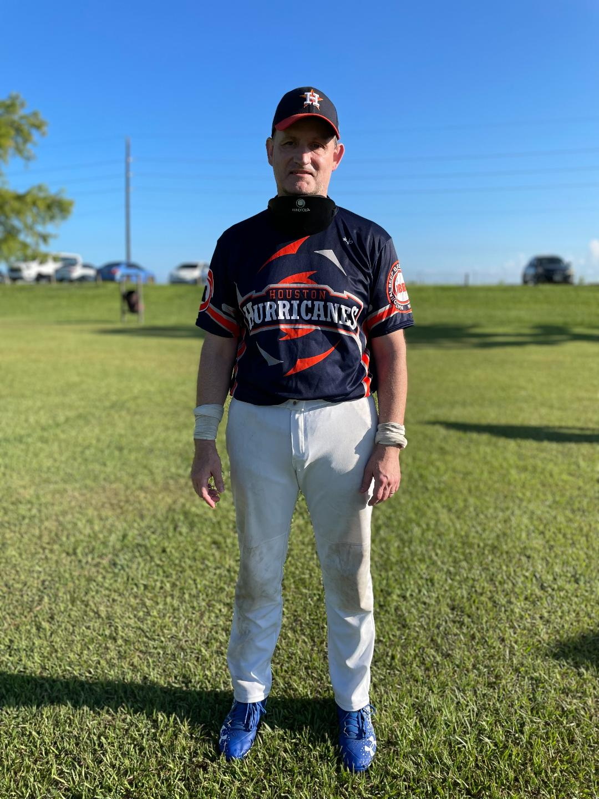

#8 Doug Biggins

Demographics
Location: Topeka, KS Age: 51 Ht: 6'1 Wt: 200lbs
Playing Experience
- Houston Hurricanes 2022-Present
- Bayou City Heat 2014-2015, 2018, 2021
- Colorado Storm 2011-2013, 2016-2017
- Kansas All-Stars 2000-2010
- Topeka Gofors 1995-1999
World Series
- 1999 - Offensive Team - Topeka Gofors
- 2000 - Offensive Team - Kansas All-Stars
- 2005 - Offensive Team - Kansas All-Stars
- 2007 - Wold Champions - Kansas All-Stars